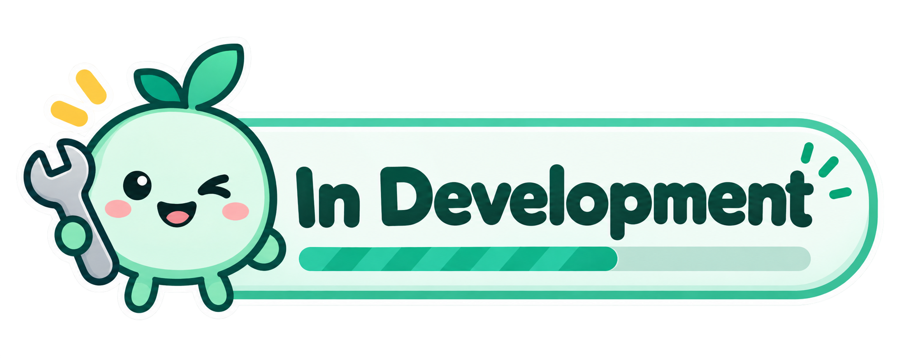

Centralized IT Infrastructure & Network Hub - V1.5
A unified internal platform built to manage hardware assets, enforce access governance, and track network uptime across Cardbiz operations. Consolidating fragmented tools and spreadsheets into a single operational interface.

Engineered for infrastructure control
Three foundational pillars powering reliable internal operations.
Hardware & Endpoint Inventory
Continuous discovery and cataloging of rack servers, managed network switches, routers, and workstation assignments with live IP and MAC mapping.
Scans subnets on a schedule, tags every device, and flags unknown hardware that appears on the network.
Access Governance & RBAC
Granular role-based access control across internal systems, tracked credential delegations, and timestamped audit trails for compliance.
Every grant, delegation and revoke is logged with who, what and when, ready for audit review.
Telemetry & Uptime Alerts
Proactive ping checks, latency threshold monitors, and automated alerts to catch failing switches or dropped connections before users report them.
Set latency thresholds per device and get alerted the moment a switch or link starts degrading.
Release Pipeline
Structured delivery milestones toward production rollout.
-
PHASE 01
COMPLETED
Architecture & DB
Schema design, auth boundary definitions, and data contracts.
Delivered: core schema, SSO boundary and API contracts signed off.
-
PHASE 02
COMPLETED
Discovery Engine
Subnet scanning, device telemetry models, and asset tagging.
Delivered: automated subnet sweeps with IP/MAC mapping and asset tags.
-
PHASE 03
IN PROGRESS
RBAC & Dashboard
Cardbiz role hierarchy, policy management, and operations UI.
Now: role editor, audit trail views and the live operations dashboard.
-
PHASE 04
PLANNED
Fleet Rollout
Internal staging verification and production handover.
Next: staging soak test, user training and production cutover.